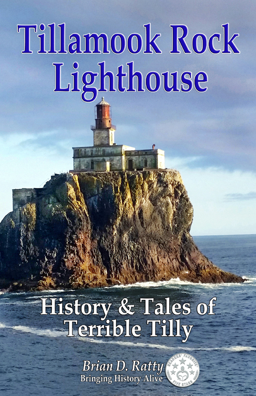

Book Details
Soft Cover Price $15.00
Kindle Edition $3.99
Tillamook Rock Lighthouse: History and Tales of Terrible Tilly
Brian D. Ratty
Soft Cover Price $15.00
Kindle Edition $3.99
Brian D. Ratty
Lighthouses and their Keepers have gone the way of the blacksmith and milkman. Although the weathered relic, one mile off shore of Tillamook Head Oregon, reminds us of the once powerful sentinel Tillamook Rock Lighthouse and her seventy seven years of service keeping the sea lanes open and seafarers safe. The hardy men who stood duty on the light station learned quickly what solitary isolation was all about and many of them considered it the loneliest job in the world.
The lighthouse rightfully earned the nickname “Terrible Tilly” due to the shattering experiences of the people on the monolith during horrific, pounding storms. With no way off the Rock, and no way to call for help, all the Keepers could do was “Ride it out.”This is the story of those who built it, those who manned it, and those who paid the ultimate price keeping the beacon burning.
This is the fascinating history and tales of the Tillamook Rock Lighthouse, tall, proud and strong.

I found the information fascinating and the struggles that the men faced are fairly unthinkable by today’s living standards. Tillamook Rock Lighthouse, History & Tales of Terrible Tilly, by Brian D. Ratty, took me back to a time when
true grit, will and determination were the required tools of the day. Highly recommended, Bruce E. Arrington,
author Goodreads.
You have been a good keeper of the light Brian, it is not a matter of if those old walls could talk, you have given them voice and they have spoken. Keeps that light burning! Meg & Ray P
Tillamook Rock Lighthouse: History & Tales of Terrible Tilly by Brian D. Ratty took me back to a time when true grit, will and determination were the required tools of the day… The book is mostly written in a narrative form by the author and includes a number of black and white illustrations… I am from the Pacific Northwest and have spent some time on the Oregon Coast; this book caught my attention at once. And instead of being filled with boring drudgery, I found the book to be well written, detailed and exciting enough to keep me reading. Not all non-fiction books can do that… The author breathes life into the story, as if the lighthouse was a person who heroically outlasted 70 plus years of storms and sea… It brought a nice personal touch… highly recommended. Reviewed By Bruce Arrington for Readers’ Favorite - 5 Stars